Mọi màn sau đăng nhập chọn một trong bảy bố cục có tên với sáu vùng chuẩn, chờ tải theo hình bố cục, rỗng · lỗi · ngoại tuyến một luật, ba khổ và một menu Tạo trên vỏ; trang mẫu sống không cần cơ sở dữ liệu hay đăng nhập cho ảnh chuẩn để đối chiếu màn mới; răng lint và bản đồ hệ thiết kế giữ luật
Vì sao làm
Mọi màn sau đăng nhập chọn một trong bảy bố cục có tên của hệ bố cục — Tràn, Danh sách – chi tiết, Đọc, Hồ sơ hai cột, Bảng điều khiển, Luồng nhiều bước, Dòng tin — với sáu vùng chuẩn (đầu màn, thanh công cụ, thân, cột phụ, chân, ngăn nổi), chờ tải theo hình của bố cục, rỗng · lỗi · ngoại tuyến một luật chung, ba khổ 1440 · 1024 · 375 và một menu Tạo trên vỏ; trang mẫu sống bày mọi bố cục × trạng thái × khổ không cần cơ sở dữ liệu hay đăng nhập, ảnh chụp từ nó là ảnh chuẩn để đối chiếu màn mới
Đã hứa
- AC-1 — MCP của kho: Given kho vừa clone, chưa có cấu hình MCP người dùng When mở phiên Claude Code ở gốc kho Then `.mcp.json` khai hai máy chủ `reui` (HTTP, style `base-nova`) và `shadcn`; khoá ReUI chỉ đọc từ biến môi trường `REUI_LICENSE_KEY`, tệp không mang chuỗi khoá nào; bước kiểm chuẩn đỏ khi tệp mang chuỗi trông như khoá thật hay thiếu một trong hai máy chủ.
- AC-2 — Bảy bố cục và sáu vùng: Given một màn dưới `(app)` dựng `<BoCuc kieu="…">` với vùng của nó When màn hiện ở máy tính rộng Then đúng bảy kiểu được nhận (kiểu lạ là lỗi kiểu TypeScript); bố cục chỉ giữ khung trang — lề, dải đầu màn, xếp thân và cột phụ theo kiểu — và không tự dựng Frame: mỗi vùng là một khối ReUI nguyên vẹn mang Frame của nó (đầu khung, thanh công cụ, chân); cột phụ chỉ ở Danh sách – chi tiết (hồ sơ trong ngăn inset bên phải) và Luồng nhiều bước; Hồ sơ một cột căn giữa; lề, khoảng cách lấy từ token bố cục, không từ số trong màn; mỗi ô của trang mẫu mang một nhãn nguồn (khối · c-* · thành phần · ghép) ở bảng bóc tách, không ô nào vẽ tay.
- AC-3 — Đầu màn: Given một màn khai đường dẫn, tiêu đề, một dòng mô tả và danh sách nút When đầu màn hiện Then đường dẫn luôn hiện (ít nhất nhà › màn, sâu hơn thì thêm tầng) và mục cha là lối về — điện thoại chỉ hiện mục cha dạng «‹ cha»; đúng một nút chính, tối đa hai nút phụ, nút còn lại vào menu «…».
- AC-4 — Menu Tạo và cột thứ hai trên vỏ: Given người đăng nhập với vai bất kỳ ở Tham chiếu §9 When thanh trên hiện Then việc tạo hiện ở đúng một chỗ: một nút chính (việc tạo đầu tiên của vai) cộng menu các việc tạo còn lại theo lối đã chọn ở Cổng Phạm vi; vai không có việc tạo không thấy nút; không màn nào còn nút tạo trùng ở đầu khung; Tham chiếu §9 ghi cách mới; mọi nhà (Hôm nay, Bảng hàng, Đã gửi, Đội, Cài đặt sàn) có cột thứ hai, mặc định mở, người gập thì máy nhớ theo người, sàn, nhà.
- AC-5 — Trạng thái chung: Given một tuyến dưới `(app)` đang tải, lỗi, không thấy, hay rỗng, hay mất mạng khi đang xem bản đã tải When người mở tuyến Then chờ tải theo hình của bố cục (lưới theo `c-data-grid-21` cho Tràn); lỗi và «không thấy» cấp tuyến có ở `(app)` và gốc (kể cả `global-error`) và đi qua `TrangThai`; `TrangThai` có kiểu chờ tải và chuyển thể `empty-state-1`, `-2`; ngoại tuyến là dải báo ở đầu màn, nội dung đã tải giữ nguyên.
- AC-6 — Ba khổ: Given mỗi bố cục trên trang mẫu sống When xem ở 1440, 1024 và 375 Then bản điện thoại theo ADR-0024 §5 — Tràn thành thẻ, Danh sách – chi tiết mở chi tiết trong ngăn từ đáy, Hồ sơ giữ một cột, Luồng nhiều bước ngăn toàn màn, Đọc và Dòng tin giữ, Bảng điều khiển không có trên điện thoại; ngăn nổi là ngăn bên ở máy tính và ngăn từ đáy ở điện thoại; không cuộn ngang ở 375.
- AC-7 — Trang mẫu sống: Given máy chủ web chạy không có cơ sở dữ liệu và trình duyệt không có cookie phiên When mở `/mau/he-bo-cuc` Then trang hiện đủ bảy bố cục × năm trạng thái (mặc định · chờ tải · rỗng · lỗi · ngoại tuyến) × ba khổ bằng dữ liệu mẫu, mỗi tổ hợp có địa chỉ riêng; trang không nhập lớp gọi API; ở bản chính thức trang theo lối đã chọn ở Cổng Phạm vi (Hỏi-1).
- AC-8 — Ảnh chuẩn và đối chiếu: Given ảnh chuẩn chụp từ trang mẫu sống When một vòng giao diện chạm màn của một nhóm có khai bố cục Then kho có 21 ảnh chuẩn sáng (bảy bố cục × ba khổ) và 7 ảnh chuẩn tối (bảy bố cục ở 1440), chụp bằng `_acceptance/he-bo-cuc/thu/chup-anh-chuan.cjs`, ghi ở danh mục khối; mục bản đồ khuôn có khoá `bo_cuc`; bộ đối chiếu lập cặp «màn mới · ảnh chuẩn của bố cục nó dùng», kể cả màn đầu của nhóm chưa có màn mẫu; trang ba lối nhận nhiều ô trong một hồ sơ (`ba-loi/<mã ô>/`, lệnh `--o <mã ô>`) và kiểm chuẩn kiểm từng ô, lỗi gọi tên ô.
- AC-9 — Răng lint: Given một màn dưới `(app)` (tệp thử) When chạy `npm run lint` Then đỏ với thông điệp gọi tên luật ở mỗi ca: nhóm của màn không khai bố cục hay khuôn không dựng đúng kiểu; màn đặt `max-w-*`, `h-[…]`, `w-[…]`, `min-h-[…]` hay lề ở gốc; nhập `Skeleton` ngoài khuôn chờ tải; nhập `Sheet`/`Drawer` ngoài ngăn nổi; màn của hàng đang chạy mang ngoại lệ có hạn (hạn trỏ hàng đã gộp thì đỏ); mức nợ giữ 0.
- AC-10 — Chuyển màn và bản đồ hệ thiết kế: Given kho sau hàng When đọc mã và tài liệu Then Cài đặt sàn ở `(app)/settings` đi bố cục Đọc, mục Người dùng chuyển thể `solution-users-8`; trang tạm đi bố cục Đọc; `vo-va-ia.md` §2 có cột «Bố cục»; skill `quy-hang-ui` có bảng «Bản đồ hệ thiết kế» mỗi tệp một dòng (lớp, việc, đường dẫn), `docs/README.md` trỏ sang bảng; kiểm chuẩn đỏ khi một tệp thuộc hệ thiết kế thiếu dòng.
Thiết kế
docs/superpowers/specs/2026-11-02-he-bo-cuc-design.md
Quyết định
- 2026-11-02 · Máy · approach · S1 — Đã tra tri thức: hàng 91 he-bo-cucKho đã khai tri_thuc — bước thiết kế tra trang trước khi chọn.
- 2026-11-02 · Máy · approach · S1 — Bảy bố cục, sáu vùng và ba khổ dựng đúng bảng của ADR-0024; màn chỉ điền vùng, không tự chia.ADR-0024 quyết định 2, 3, 5 đã chốt danh sách, ma trận vùng và bản điện thoại.
- 2026-11-02 · Máy · approach · S1 — Trang mẫu sống đặt ở /mau/he-bo-cuc ngoài nhóm (app), proxy cho địa chỉ ấy qua khi không có phiên.Layout của (app) đọc phiên và đưa về /login; trang mẫu phải mở không đăng nhập (AC-7).
- 2026-11-02 · Máy · approach · S1 — Ảnh chuẩn là 21 ảnh — bảy bố cục × ba khổ ở trạng thái mặc định; bốn trạng thái khác xem trên trang mẫu, không chụp.Bốn trạng thái dùng chung khung của bố cục; 105 ảnh làm kho phình mà không thêm vật để so.
- 2026-11-02 · Máy · approach · S1 — Cài đặt sàn rời app/settings vào app/(app)/settings, bỏ layout riêng.Răng «màn dưới (app) khai bố cục» (AC-9) và vùng hàng 91 đều tính trên (app)/settings.
- 2026-11-02 · Máy · approach · S1 — Màn của hàng đang chạy (Bảng hàng, hồ sơ căn, Hôm nay, lead, proto) mang ngoại lệ có hạn trỏ mã hàng nhận.ADR-0024 quyết định 9 và mục Hệ quả: chuyển màn khi hàng của nó tới bước.
- 2026-11-02 · Máy · approach · S1 — Hỏi-1: trang mẫu sống chỉ mở ngoài bản chính thức; bản chính thức trả «không thấy».Trang không mang dữ liệu thật, nhưng mở trên bản chính thức là bày toàn bộ giao diện cho ai có địa chỉ — khẩu vị rủi ro của chủ kho.
- 2026-11-02 · Máy · approach · S1 — Hỏi-2: menu Tạo theo lối ReUI — nút chia: «+ Lead» một chạm cộng mũi tên mở các việc tạo khác của vai.Gu nhìn và đánh đổi một chạm của nút chính trên vỏ — trình trên trang ba lối (ADR-0024 quyết định 12).
- 2026-11-02 · Máy · approach · S1 — Hỏi-3: đầu màn ghép FrameHeader + breadcrumb + button + dropdown-menu trong Frame của màn, ghi «Chỗ hở».ReUI không có khối đầu trang (ADR-0024 §3); hình đầu màn là gu nhìn của chủ kho — trình trên trang ba lối.
- 2026-11-02 · Máy · approach · S1 — Hỏi-4: ba bố cục chưa có màn nào dùng (Bảng điều khiển, Luồng nhiều bước, Dòng tin) dựng theo khối nguồn ADR đã chọn.ADR-0024 quyết định 12 dặn trình ba bố cục này trên trang ba lối; chọn khối là gu nhìn.
- 2026-11-02 · Máy · approach · S1 — Hỏi-5: máy tính vừa (1024) không có bố cục riêng; cột phụ của Danh sách – chi tiết thu thành ngăn nổi dưới khổ vừa.Giả định ADR-0024 chờ gạch ở Cổng Phạm vi — chưa xem trên bản chạy.
- 2026-11-02 · Máy · approach · S1 — Hỏi-6: không đủ quyền không có khuôn riêng; dùng TrangThai notice trong thân của bố cục.Giả định ADR-0024 chờ gạch ở Cổng Phạm vi; luật KH-cd-khong-quyen đã dùng cách này.
- 2026-11-02 · Máy · approach · S1 — Hỏi-2: menu Tạo theo Verve — một nút viền «+ Tạo» mở mọi việc tạo của vai (điện thoại: nút «+»); màn giữ đúng một nút chính cho đối tượng của chính nó.Khảo sát Verve 02/11: «+ Create» mở menu New Deal · Contact · Company · Import · Report, màn vẫn có «Add Contact», «New deal».
- 2026-11-02 · Máy · approach · S1 — Hỏi-3: đầu màn ba dạng theo bố cục — trong khung (Tràn, Danh sách – chi tiết) · lối về cộng tiêu đề ngoài khung (Hồ sơ hai cột, Luồng nhiều bước) · dải đường dẫn ngoài khung (Đọc, Bảng điều khiển, Dòng tin); 375 đường dẫn còn mục cuối.Khảo sát Verve 02/11: ba dạng đầu màn theo loại màn, mọi màn có h1; ReUI không có khối đầu trang.
- 2026-11-02 · Máy · approach · S1 — Hỏi-7: Hồ sơ hai cột ghép theo trang hồ sơ của Verve (đầu lối về, cột dữ kiện trái 320px, cột chính phải; 375 dữ kiện trước, nút dưới tên); solution-crm-4 chuyển làm khối nguồn của cột phụ / ngăn nổi trong Danh sách – chi tiết.get_block solution-crm-4: «Right-side sheet to inspect and advance a deal» — là ngăn bên, không phải trang; ReUI không có khối trang hồ sơ; Verve tự ghép.
- 2026-11-02 · Máy · approach · S1 — Hỏi-8: bố cục Đọc dùng hết bề rộng cột nội dung, dòng cài đặt chia hai nửa nhãn | ô; --container-doc chỉ còn cho Dòng tin.Đo Verve 02/11: Settings rộng 1135px ở 1440, không giới hạn; ReUI dặn gỡ max-width ở gốc settings-3, bề rộng thuộc bố cục.
- 2026-11-02 · Người (Manh Phan) · approach · gate1 — Đầu màn luôn có đường dẫn (nhà › màn, sâu hơn thì thêm tầng) ở mọi bố cục và mọi dạng đầu màn; điện thoại chỉ hiện mục cuối.người chọn ở Cổng Phạm vi: «Luôn có breakcrumb»
- 2026-11-02 · Người (Manh Phan) · approach · gate1 — Mọi nhà có cột thứ hai (sub nav), mặc định mở; người gập thì máy nhớ theo người, sàn, nhà — đổi Tham chiếu §9 (Hôm nay và Đội nay có cột thứ hai, Bảng hàng thôi gập sẵn).người chọn ở Cổng Phạm vi: «Mặc định luôn giữ và có sub nav»
- 2026-11-02 · Máy · approach · S1 — Bố cục không tự dựng Frame: chỉ giữ khung trang (lề, dải đầu màn, xếp thân và cột phụ); mỗi vùng là một khối ReUI nguyên vẹn mang Frame của nó — thanh công cụ và chân thuộc khối, ma trận vùng của bố cục còn đầu màn · thân · cột phụ.Bóc tách 02/11 (discovery/boc-tach.md): khối ReUI nào cũng mang Frame (solution-crm-3 là trọn màn Tràn của Verve); bố cục bọc Frame thì khối thành Frame trong Frame, màn phải vẽ tay lại bảng, chip, ô số, dòng tin.
- 2026-11-02 · Người (Manh Phan) · approach · gate1 — Bố cục hồ sơ lấy theo màn hồ sơ căn đang có (hàng 17): một cột giải phẫu solution-crm-4 — đầu hồ sơ, khối số chính, các mục có tiêu đề ngăn bằng đường kẻ; toàn màn căn giữa 48rem, cạnh bảng là cột phụ của Danh sách – chi tiết. Bố cục đổi tên «Hồ sơ hai cột» → «Hồ sơ»; giải phẫu rút thành thành phần dùng chung để màn hồ sơ khác (liên hệ, lead) dùng lại.người chọn ở Cổng Phạm vi: «Layout hiện nay của căn chi tiết tôi thích hơn làm thế nào vẫn chuẩn hoá và dùng lại layout hiện nay?»
- 2026-11-02 · Người (Manh Phan) · approach · gate1 — Danh sách – chi tiết: bảng giữ toàn bề rộng, hồ sơ trượt ra trong ngăn inset bên phải theo sheet-9 (cách mép, bo góc, đầu ngăn có tên và nút, thân cuộn, chân dính đáy) — ngăn đè lên bảng mà bảng vẫn bấm được, bấm dòng khác thì ngăn đổi hồ sơ; thay cột chia đôi kéo được (resizable) của hàng 17.người chọn ở Cổng Phạm vi: «Tham khảo cách hiển thị của https://reui.io/blocks/application/sheet hoặc https://reui.io/blocks/application/dialog tôi thấy khá phù hợp? vẫn giữ bên dưới là bảng chi tiết slide bên phải sang tương tự ux.»
- 2026-11-02 · Người (Manh Phan) · approach · gate1 — Đầu màn: điều khiển cấp màn (chọn kỳ, khoảng ngày) nằm bên phải cùng các nút, không cạnh tiêu đề; chọn kỳ là Select có biểu tượng lịch (như «Quarter ▾» của Verve); cạnh tiêu đề chỉ còn nhãn (trạng thái, bước). Tiêu đề trùng mục cuối của đường dẫn.người chọn ở Cổng Phạm vi: «Tôi thấy vẫn còn vẽ tay hoặc style của design system chỗ Đội tuần tháng nếu đúng ux thì nên nằm bên tay phải sub navigation?»
- 2026-11-02 · Người · seal · gate1 —
- 2026-11-02 · Người · seal · gate1 —
- 2026-11-02 · Máy · revisit · S2 — Mở lại Cổng Phạm vi: AC-2 và E2 còn ghi Hồ sơ có cột phụ «dữ kiện trái 20rem»; sửa thành Hồ sơ một cột căn giữa, cột phụ chỉ ở Danh sách – chi tiết và Luồng nhiều bước.Dòng gate1 d-20261102T031213Z-20 (chủ kho chọn hồ sơ một cột theo hàng 17) đi trước chữ duyệt nhưng hợp đồng không được sửa theo — mâu thuẫn sổ↔hợp đồng phát hiện khi lập kế hoạch.
- 2026-11-02 · Máy · fix · S3 — Bốn tiêu chí xem bằng mắt (E4u, E6, E7u, E10u) thêm một bước đầu chép nguyên đích đã duyệt và chỉ chỗ máy chủ, chỗ đọc mã đăng nhập; riêng E7u chấm trên máy chủ thứ hai không có cơ sở dữ liệu ở cổng 3494 thay vì dừng Postgres chung.Bộ sinh args của kit bỏ trường target nên người chấm không biết cổng và tài khoản; các tiêu chí giao diện chấm song song nên dừng Postgres 5564 cho E7u sẽ làm hỏng E4u, E10u.
- 2026-11-02 · Máy · fix · S4-r1 — Việc tạo theo vai đọc lại đúng bảng §9 sau ADR-0011: trưởng nhóm có Nhập Excel, quản trị sàn không có việc tạo; điện thoại có tập việc tạo riêng ở lõi, nút «+» chỉ mở «+ Lead», telesales giữ tab Lead.Lượt chấm 1: E4u thấy trưởng nhóm thiếu Nhập Excel; phát hiện trong hợp đồng (AC-4) thấy nút «+» điện thoại mở Nhập Excel, Phát hàng trái Tham chiếu §9 dòng «Điện thoại … Không có Nhập Excel, Phát hàng».
- 2026-11-02 · Máy · fix · S4-r1 — Tiêu chí sàn thiết kế (E11) chạy bằng lệnh tương đương kho đã khai cho lượt chấm (tự tìm bộ kit khi thiếu biến môi trường), thay lệnh chỉ chạy được khi có biến ấy.Lượt chấm 1 chặn E11 vì shell của người chấm không có CLAUDE_PLUGIN_ROOT; config.yaml đã khai script.design_floor đúng cho trường hợp này.
- 2026-11-02 · Người (Manh Phan) · approach · gate1 — Bố cục Hồ sơ giữ một cột như đã chốt; không thêm Cột thuộc tính. Ý «đóng hay mở, người dùng chọn» là cột thứ hai của nhà — đã có: mặc định mở, gập được, máy nhớ theo người, sàn, nhà.người chọn ở Cổng Phạm vi: «Tôi đang nói cột 2» (02/11, sau khi xem hình vẽ lại đủ bốn phần của màn Hồ sơ).
- 2026-11-02 · Người (Manh Phan) · approach · gate1 — Đã duyệt theo khuyến nghị: Chỉ mở ngoài bản chính thức (bản xem trước, máy dev); bản chính thức trả «không thấy».người chọn ở Cổng Phạm vi: «duyệt» theo khuyến nghị (02/11, lần duyệt ghi ở commit 8c34118 và 580f1dd).
- 2026-11-02 · Người (Manh Phan) · approach · gate1 — Đã duyệt theo khuyến nghị: Theo khối nguồn ADR: stats-7 + data-grid-grouping-2, solution-crm-6, solution-crm-5.người chọn ở Cổng Phạm vi: «duyệt» theo khuyến nghị (02/11, lần duyệt ghi ở commit 8c34118 và 580f1dd).
- 2026-11-02 · Người (Manh Phan) · approach · gate1 — Đã duyệt theo khuyến nghị: Không bố cục riêng; cùng bố cục, cột phụ thu thành ngăn dưới 1024.người chọn ở Cổng Phạm vi: «duyệt» theo khuyến nghị (02/11, lần duyệt ghi ở commit 8c34118 và 580f1dd).
- 2026-11-02 · Người (Manh Phan) · approach · gate1 — Đã duyệt theo khuyến nghị: Không khuôn riêng — TrangThai notice nói ai xem được.người chọn ở Cổng Phạm vi: «duyệt» theo khuyến nghị (02/11, lần duyệt ghi ở commit 8c34118 và 580f1dd).
- 2026-11-02 · Người (Manh Phan) · approach · gate1 — Đã duyệt theo khuyến nghị: Hết bề rộng như Verve.người chọn ở Cổng Phạm vi: «duyệt» theo khuyến nghị (02/11, lần duyệt ghi ở commit 8c34118 và 580f1dd).
- 2026-11-02 · Máy · approach · S1 — Menu Tạo giữ nút chia «+ Lead ▾» — một chạm tạo lead, mũi tên mở việc tạo khác của vai, màn không đặt nút tạo riêng; điện thoại nút «+» chỉ mở «+ Lead».Lượt chấm 1 thấy hai nguồn lệch: hợp đồng, Tham chiếu §9 và trang ba lối là nút chia; dòng sổ trước khi duyệt lại chọn «+ Tạo ▾» mở mọi việc mà hợp đồng chưa từng sửa theo.
- 2026-11-02 · Máy · descope · S1 — Tiêu chí xem màn Người dùng bỏ «lời mời đang chờ» và đọc «bề rộng đọc» là bề rộng của bố cục Đọc (hết bề rộng cột nội dung, như đã chốt); ghi hạn chế đã biết «chưa có lời mời — thêm người là vào thẳng».Lượt chấm 1: sản phẩm thêm thành viên thẳng, không có lời mời chờ; bố cục Đọc đã chốt dùng hết bề rộng, nên hai vế cũ của tiêu chí không đo đúng nghĩa đã chốt.
- 2026-11-02 · Người · seal · gate1 —
- 2026-11-02 · Người (Manh Phan) · approach · gate1 — Bố cục Hồ sơ giữ thân hồ sơ đang chạy (solution-crm-4, hàng 17) và thêm Cột thuộc tính (CotThuocTinh) bên trái 320px kiểu Verve, người dùng mở hay gập; trên máy tính mặc định mở, nút gập ở đầu cột, gập còn dải mảnh có nút mở lại, máy nhớ theo người và sàn như cột thứ hai; điện thoại cột xếp trên thân và gập được.người chọn ở Cổng Phạm vi: «Giữ lại chỉ là đóng hay mở, người dùng có thể lựa chọn» rồi «Đồng ý cột thuộc tính. và đồng ý với các hành vi trên» (02/11, trên bản vẽ máy tính).
- 2026-11-02 · Máy · approach · S1 — Hỏi-2 (trình lại): menu Tạo giữ nút chia «+ Lead ▾» — một chạm tạo lead, mũi tên mở việc tạo khác của vai, màn không đặt nút tạo riêng; trên điện thoại nút «+» chỉ mở «+ Lead».Lượt chấm 1 (E4u) thấy hai nguồn lệch: hợp đồng AC-4, Tham chiếu §9 và trang ba lối là nút chia, còn dòng Hỏi-2 trước khi niêm (d-13) chọn «+ Tạo ▾» mở mọi việc mà AC-4 chưa từng sửa theo.
- 2026-11-02 · Máy · descope · S1 — Hỏi-9: tiêu chí xem Người dùng (E10u) bỏ «lời mời đang chờ» và đọc «bề rộng đọc» là bề rộng của bố cục Đọc theo Hỏi-8 (hết bề rộng cột nội dung); ghi Known limits «chưa có lời mời — thêm người là vào thẳng».Lượt chấm 1 (E10u): sản phẩm thêm thành viên thẳng (POST /members), không có lời mời chờ; Hỏi-8 đã chốt bố cục Đọc dùng hết bề rộng, nên hai vế của E10u không đo được đúng nghĩa đã chốt.
- 2026-11-02 · Máy · fix · S4-r2 — Luồng nhiều bước trên điện thoại mở ngăn phủ toàn màn (ngăn nổi thêm kiểu toàn màn, đóng là quay lại trang trước); máy tính giữ trong trang như cũ.Lượt chấm 2: E6 thấy Luồng nhiều bước ở 375 hiện thẳng trong trang, trái ADR-0024 §5 và ma trận bản điện thoại «ngăn toàn màn».
- 2026-11-02 · Máy · fix · S4-r2 — Nhận cây mới cho lượt chấm kế: thay đổi sau commit bf10b05 là bản sửa E6 có chủ đích của phiên G (750e735, 263bc2e), không phải tác tử chấm ghi vào cây.Dòng cay-doi của vòng 2 có tac_tu rỗng; tệp «không rõ chủ» đúng là bản sửa Luồng nhiều bước — bộ đếm sau lượt chạy sau khi đã commit bản sửa.
- 2026-11-02 · Máy · revisit · gate2 — Ngoài-1: ghi Known limitsmáy tự định tuyến theo đề xuất S4 «known-limits» — kho bật feature_loop.ngoai_n_tu_dinh_tuyen
- 2026-11-02 · Máy · revisit · gate2 — Ngoài-2: ghi Known limitsmáy tự định tuyến theo đề xuất S4 «known-limits» — kho bật feature_loop.ngoai_n_tu_dinh_tuyen
- 2026-11-02 · Máy · revisit · gate2 — Ngoài-3: ghi Known limitsmáy tự định tuyến theo đề xuất S4 «known-limits» — kho bật feature_loop.ngoai_n_tu_dinh_tuyen
- 2026-11-02 · Máy · revisit · gate2 — Ngoài-4: chấp nhận, không sửamáy tự định tuyến theo đề xuất S4 «wont-fix» — kho bật feature_loop.ngoai_n_tu_dinh_tuyen
- 2026-11-02 · Máy · revisit · gate2 — Ngoài-5: ghi Known limitsmáy tự định tuyến theo đề xuất S4 «known-limits» — kho bật feature_loop.ngoai_n_tu_dinh_tuyen
- 2026-11-02 · Máy · revisit · gate2 — Ngoài-7: ghi Known limitsmáy tự định tuyến theo đề xuất S4 «known-limits» — kho bật feature_loop.ngoai_n_tu_dinh_tuyen
- 2026-11-02 · Máy · revisit · gate2 — Ngoài-8: ghi Known limitsmáy tự định tuyến theo đề xuất S4 «known-limits» — kho bật feature_loop.ngoai_n_tu_dinh_tuyen
- 2026-11-02 · Máy · revisit · gate2 — Ngoài-9: ghi Known limitsmáy tự định tuyến theo đề xuất S4 «known-limits» — kho bật feature_loop.ngoai_n_tu_dinh_tuyen
- 2026-11-02 · Máy · revisit · gate2 — Ngoài-10: ghi Known limitsmáy tự định tuyến theo đề xuất S4 «known-limits» — kho bật feature_loop.ngoai_n_tu_dinh_tuyen
- 2026-11-02 · Máy · revisit · gate2 — Ngoài-11: ghi Known limitsmáy tự định tuyến theo đề xuất S4 «known-limits» — kho bật feature_loop.ngoai_n_tu_dinh_tuyen
- 2026-11-02 · Máy · revisit · gate2 — Ngoài-12: ghi Known limitsmáy tự định tuyến theo đề xuất S4 «known-limits» — kho bật feature_loop.ngoai_n_tu_dinh_tuyen
Bằng chứng
Các eval
| Eval | Tiêu chí | Loại | Verdict | run_id | verified_at |
|---|---|---|---|---|---|
| E1 | AC-1 | test | PASS | minted-he-bo-cuc-E1-r1 | 2026-11-02T04:58:26Z |
| E1b | AC-1 | script | PASS | minted-he-bo-cuc-E1b-r1 | 2026-11-02T04:58:26Z |
| E2 | AC-2 | test | PASS | minted-he-bo-cuc-E2-r2 | 2026-11-02T06:14:26Z |
| E3 | AC-3 | test | PASS | minted-he-bo-cuc-E3-r2 | 2026-11-02T06:14:26Z |
| E4 | AC-4 | test | PASS | minted-he-bo-cuc-E4-r1 | 2026-11-02T04:58:26Z |
| E4c | AC-4 | test | PASS | minted-he-bo-cuc-E4c-r1 | 2026-11-02T04:58:26Z |
| E4u | AC-4 | ui-check | PASS | minted-he-bo-cuc-E4u-r2 | 2026-11-02T06:14:26Z |
| E5 | AC-5 | test | PASS | minted-he-bo-cuc-E5-r2 | 2026-11-02T06:14:26Z |
| E6 | AC-6 | ui-check | PASS | E6-he-bo-cuc-s4v2-verifier-2026-11-02 | 2026-11-02T06:14:26Z |
| E7 | AC-7 | test | PASS | minted-he-bo-cuc-E7-r2 | 2026-11-02T06:14:26Z |
| E7u | AC-7 | ui-check | PASS | minted-he-bo-cuc-E7u-r2 | 2026-11-02T06:14:26Z |
| E8 | AC-8 | test | PASS | minted-he-bo-cuc-E8-r2 | 2026-11-02T06:14:26Z |
| E9 | AC-9 | test | PASS | minted-he-bo-cuc-E9-r1 | 2026-11-02T04:58:26Z |
| E9b | AC-9 | script | PASS | minted-he-bo-cuc-E9b-r2 | 2026-11-02T06:14:26Z |
| E10 | AC-10 | test | PASS | minted-he-bo-cuc-E10-r2 | 2026-11-02T06:14:26Z |
| E10u | AC-10 | ui-check | PASS | minted-he-bo-cuc-E10u-r2 | 2026-11-02T06:14:26Z |
| E11 | AC-2 | script | PASS | minted-he-bo-cuc-E11-r2 | 2026-11-02T06:14:26Z |
Chi tiết từng eval
PASS E1 · test
AC-1: MCP của kho: Given kho vừa clone, chưa có cấu hình MCP người dùng When mở phiên Claude Code ở gốc kho Then `.mcp.json` khai hai máy chủ `reui` (HTTP, style `base-nova`) và `shadcn`; khoá ReUI chỉ đọc từ biến môi trường `REUI_LICENSE_KEY`, tệp không mang chuỗi khoá nào; bước kiểm chuẩn đỏ khi tệp mang chuỗi trông như khoá thật hay thiếu một trong hai máy chủ.
carry-forward tu round 1 — delta khong cham paths cua eval
PASS E1b · script
AC-1: MCP của kho: Given kho vừa clone, chưa có cấu hình MCP người dùng When mở phiên Claude Code ở gốc kho Then `.mcp.json` khai hai máy chủ `reui` (HTTP, style `base-nova`) và `shadcn`; khoá ReUI chỉ đọc từ biến môi trường `REUI_LICENSE_KEY`, tệp không mang chuỗi khoá nào; bước kiểm chuẩn đỏ khi tệp mang chuỗi trông như khoá thật hay thiếu một trong hai máy chủ.
carry-forward tu round 1 — delta khong cham paths cua eval
PASS E2 · test
AC-2: Bảy bố cục và sáu vùng: Given một màn dưới `(app)` dựng `<BoCuc kieu="…">` với vùng của nó When màn hiện ở máy tính rộng Then đúng bảy kiểu được nhận (kiểu lạ là lỗi kiểu TypeScript); bố cục chỉ giữ khung trang — lề, dải đầu màn, xếp thân và cột phụ theo kiểu — và không tự dựng Frame: mỗi vùng là một khối ReUI nguyên vẹn mang Frame của nó (đầu khung, thanh công cụ, chân); cột phụ chỉ ở Danh sách – chi tiết (hồ sơ trong ngăn inset bên phải) và Luồng nhiều bước; Hồ sơ một cột căn giữa; lề, khoảng cách lấy từ token bố cục, không từ số trong màn; mỗi ô của trang mẫu mang một nhãn nguồn (khối · c-* · thành phần · ghép) ở bảng bóc tách, không ô nào vẽ tay.
ℹ duration_ms 1587.935292 (lệnh npm test -w @quy-hang/web kết thúc sạch)
PASS E3 · test
AC-3: Đầu màn: Given một màn khai đường dẫn, tiêu đề, một dòng mô tả và danh sách nút When đầu màn hiện Then đường dẫn luôn hiện (ít nhất nhà › màn, sâu hơn thì thêm tầng) và mục cha là lối về — điện thoại chỉ hiện mục cha dạng «‹ cha»; đúng một nút chính, tối đa hai nút phụ, nút còn lại vào menu «…».
ℹ duration_ms 1587.935292 (lệnh npm test -w @quy-hang/web kết thúc sạch)
PASS E4 · test
AC-4: Menu Tạo và cột thứ hai trên vỏ: Given người đăng nhập với vai bất kỳ ở Tham chiếu §9 When thanh trên hiện Then việc tạo hiện ở đúng một chỗ: một nút chính (việc tạo đầu tiên của vai) cộng menu các việc tạo còn lại theo lối đã chọn ở Cổng Phạm vi; vai không có việc tạo không thấy nút; không màn nào còn nút tạo trùng ở đầu khung; Tham chiếu §9 ghi cách mới; mọi nhà (Hôm nay, Bảng hàng, Đã gửi, Đội, Cài đặt sàn) có cột thứ hai, mặc định mở, người gập thì máy nhớ theo người, sàn, nhà.
carry-forward tu round 1 — delta khong cham paths cua eval
PASS E4c · test
AC-4: Menu Tạo và cột thứ hai trên vỏ: Given người đăng nhập với vai bất kỳ ở Tham chiếu §9 When thanh trên hiện Then việc tạo hiện ở đúng một chỗ: một nút chính (việc tạo đầu tiên của vai) cộng menu các việc tạo còn lại theo lối đã chọn ở Cổng Phạm vi; vai không có việc tạo không thấy nút; không màn nào còn nút tạo trùng ở đầu khung; Tham chiếu §9 ghi cách mới; mọi nhà (Hôm nay, Bảng hàng, Đã gửi, Đội, Cài đặt sàn) có cột thứ hai, mặc định mở, người gập thì máy nhớ theo người, sàn, nhà.
carry-forward tu round 1 — delta khong cham paths cua eval
PASS E4u · ui-check
AC-4: Menu Tạo và cột thứ hai trên vỏ: Given người đăng nhập với vai bất kỳ ở Tham chiếu §9 When thanh trên hiện Then việc tạo hiện ở đúng một chỗ: một nút chính (việc tạo đầu tiên của vai) cộng menu các việc tạo còn lại theo lối đã chọn ở Cổng Phạm vi; vai không có việc tạo không thấy nút; không màn nào còn nút tạo trùng ở đầu khung; Tham chiếu §9 ghi cách mới; mọi nhà (Hôm nay, Bảng hàng, Đã gửi, Đội, Cài đặt sàn) có cột thứ hai, mặc định mở, người gập thì máy nhớ theo người, sàn, nhà.
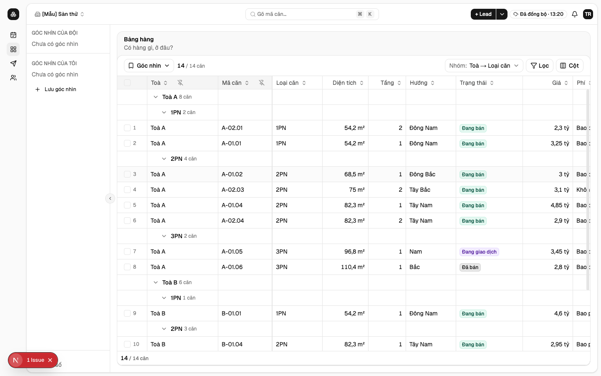
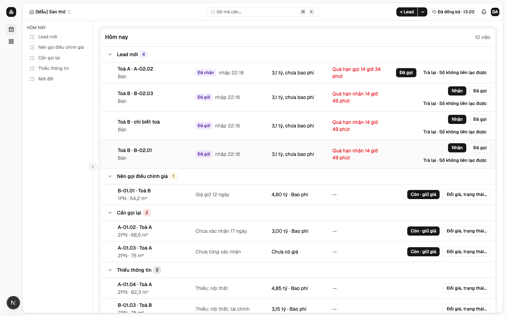


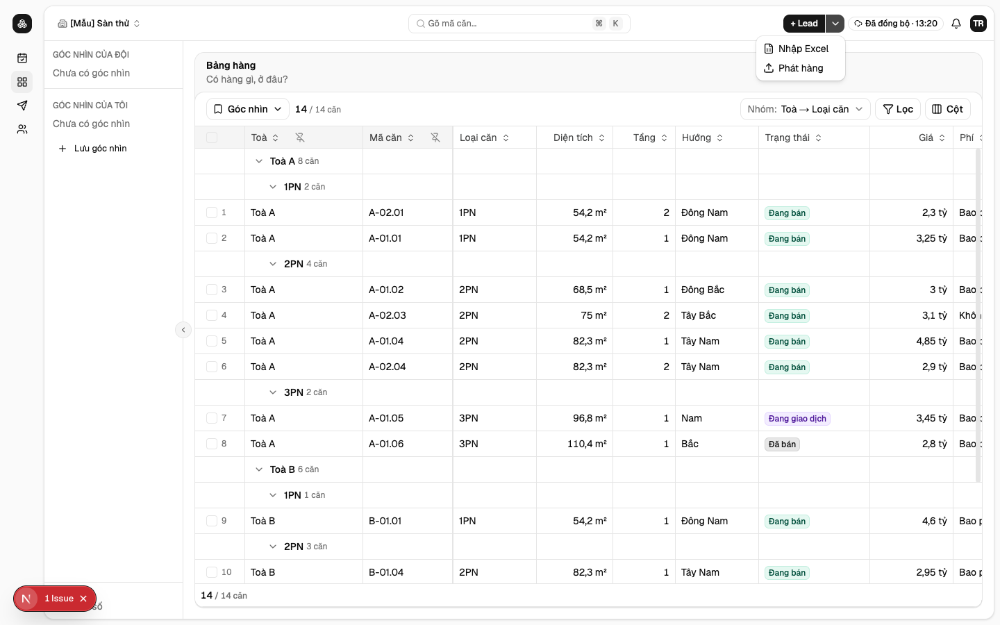
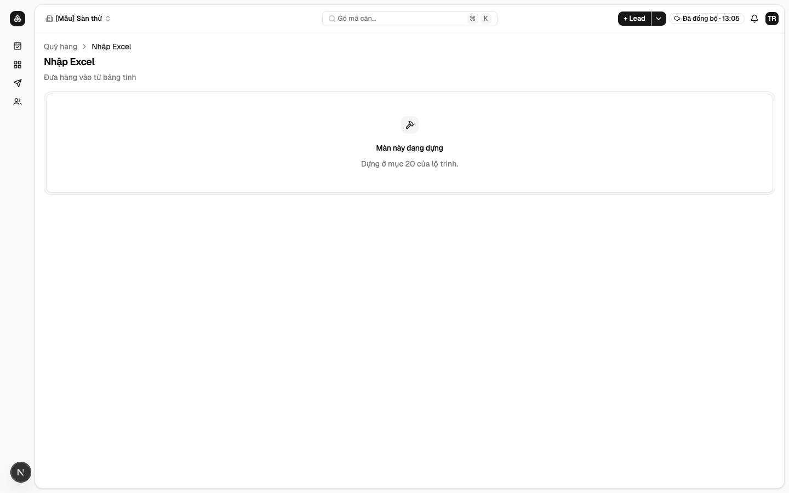
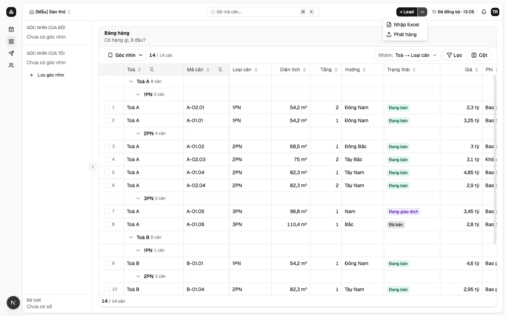
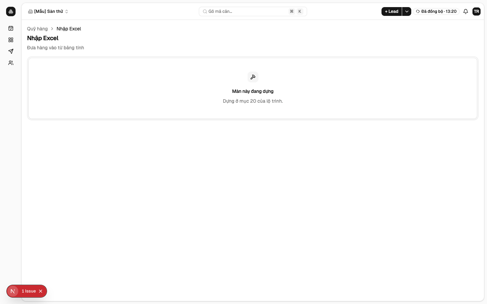
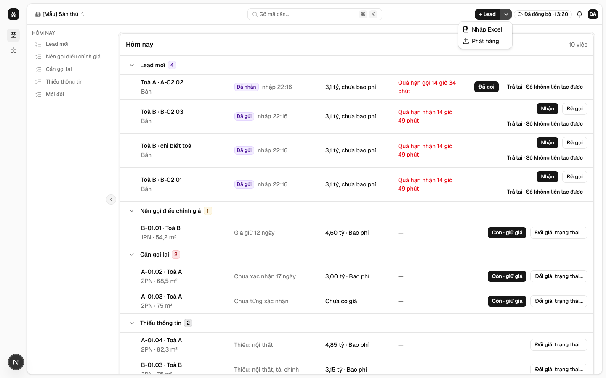

PASS E5 · test
AC-5: Trạng thái chung: Given một tuyến dưới `(app)` đang tải, lỗi, không thấy, hay rỗng, hay mất mạng khi đang xem bản đã tải When người mở tuyến Then chờ tải theo hình của bố cục (lưới theo `c-data-grid-21` cho Tràn); lỗi và «không thấy» cấp tuyến có ở `(app)` và gốc (kể cả `global-error`) và đi qua `TrangThai`; `TrangThai` có kiểu chờ tải và chuyển thể `empty-state-1`, `-2`; ngoại tuyến là dải báo ở đầu màn, nội dung đã tải giữ nguyên.
ℹ duration_ms 1587.935292 (lệnh npm test -w @quy-hang/web kết thúc sạch)
PASS E6 · ui-check
AC-6: Ba khổ: Given mỗi bố cục trên trang mẫu sống When xem ở 1440, 1024 và 375 Then bản điện thoại theo ADR-0024 §5 — Tràn thành thẻ, Danh sách – chi tiết mở chi tiết trong ngăn từ đáy, Hồ sơ giữ một cột, Luồng nhiều bước ngăn toàn màn, Đọc và Dòng tin giữ, Bảng điều khiển không có trên điện thoại; ngăn nổi là ngăn bên ở máy tính và ngăn từ đáy ở điện thoại; không cuộn ngang ở 375.
PASS E7 · test
AC-7: Trang mẫu sống: Given máy chủ web chạy không có cơ sở dữ liệu và trình duyệt không có cookie phiên When mở `/mau/he-bo-cuc` Then trang hiện đủ bảy bố cục × năm trạng thái (mặc định · chờ tải · rỗng · lỗi · ngoại tuyến) × ba khổ bằng dữ liệu mẫu, mỗi tổ hợp có địa chỉ riêng; trang không nhập lớp gọi API; ở bản chính thức trang theo lối đã chọn ở Cổng Phạm vi (Hỏi-1).
ℹ duration_ms 1587.935292 (lệnh npm test -w @quy-hang/web kết thúc sạch)
PASS E7u · ui-check
AC-7: Trang mẫu sống: Given máy chủ web chạy không có cơ sở dữ liệu và trình duyệt không có cookie phiên When mở `/mau/he-bo-cuc` Then trang hiện đủ bảy bố cục × năm trạng thái (mặc định · chờ tải · rỗng · lỗi · ngoại tuyến) × ba khổ bằng dữ liệu mẫu, mỗi tổ hợp có địa chỉ riêng; trang không nhập lớp gọi API; ở bản chính thức trang theo lối đã chọn ở Cổng Phạm vi (Hỏi-1).

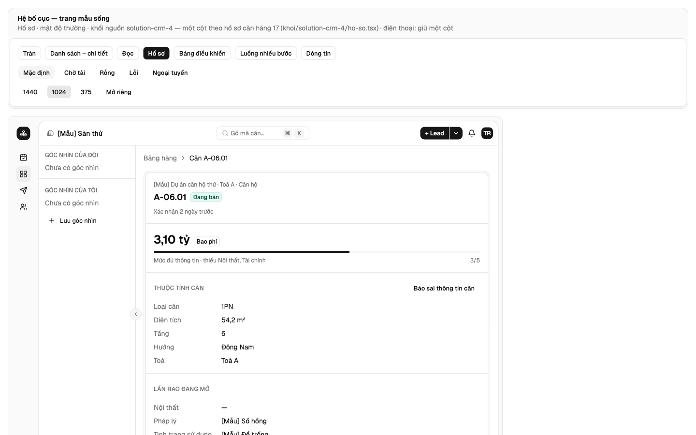
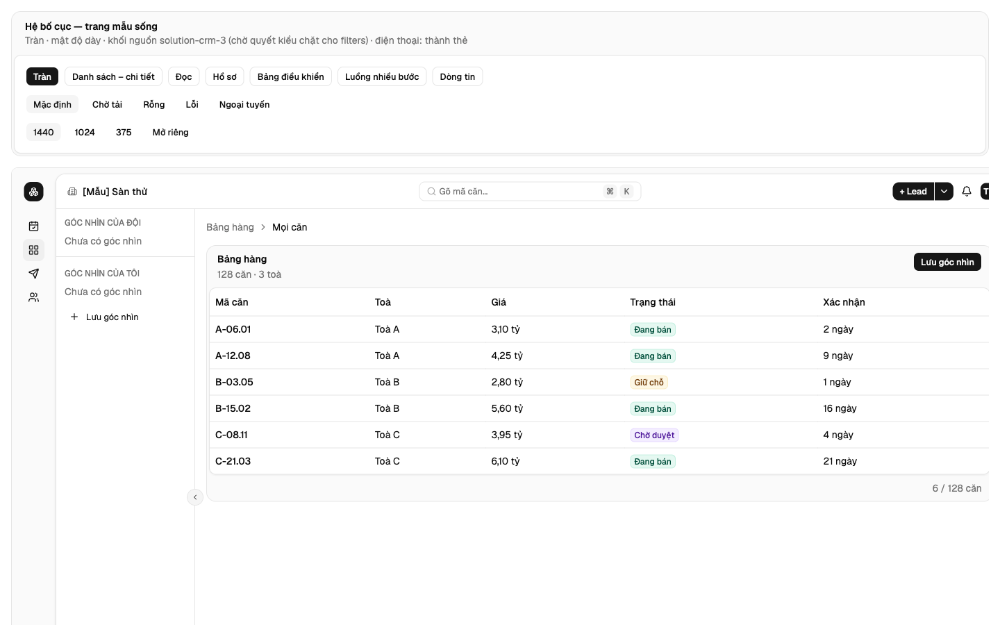

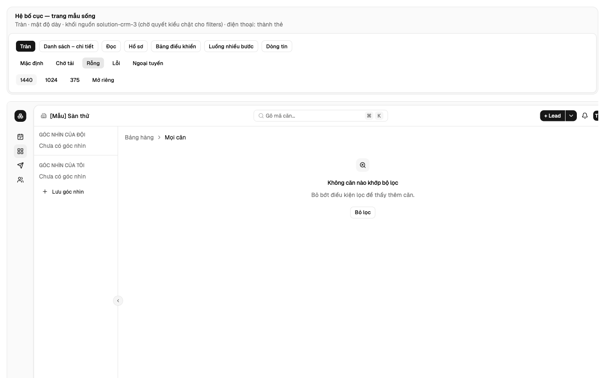
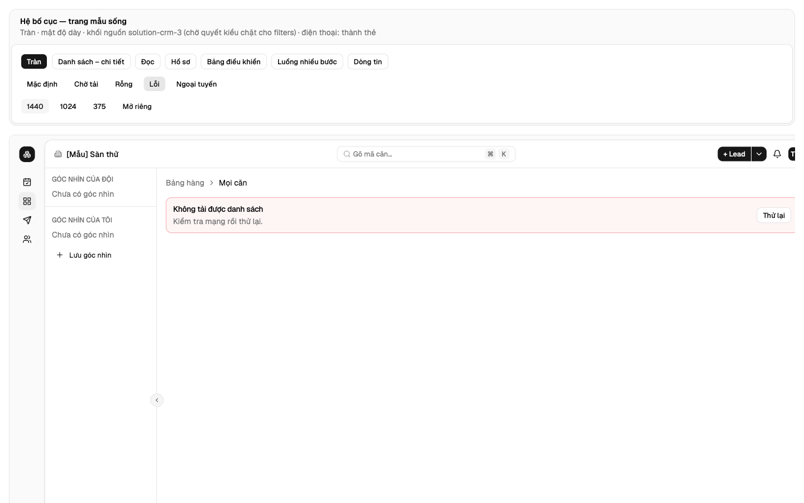
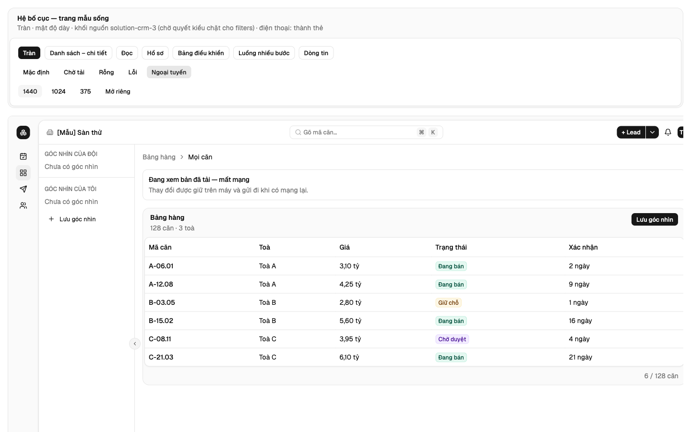

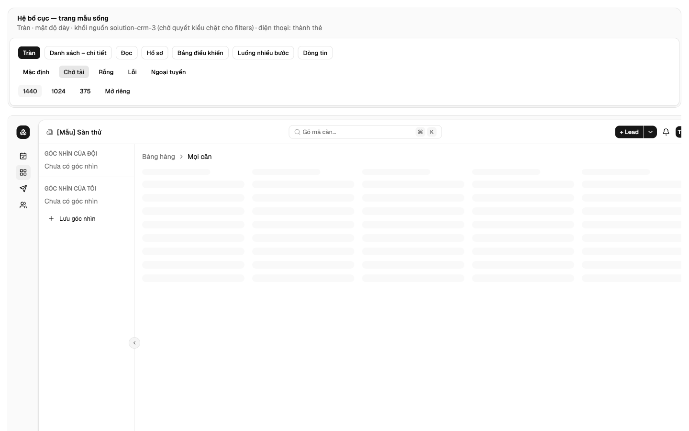

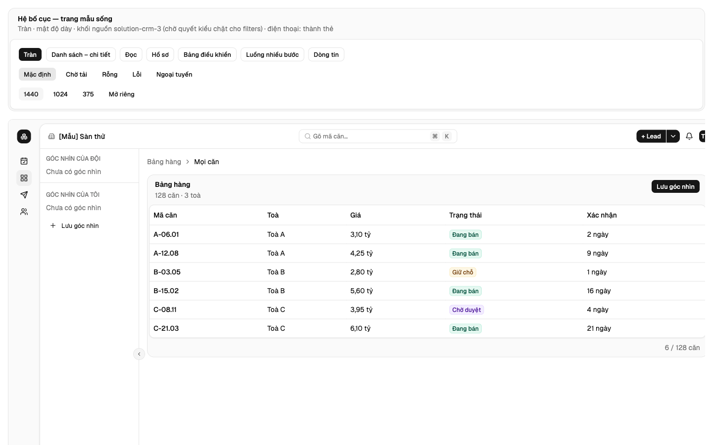
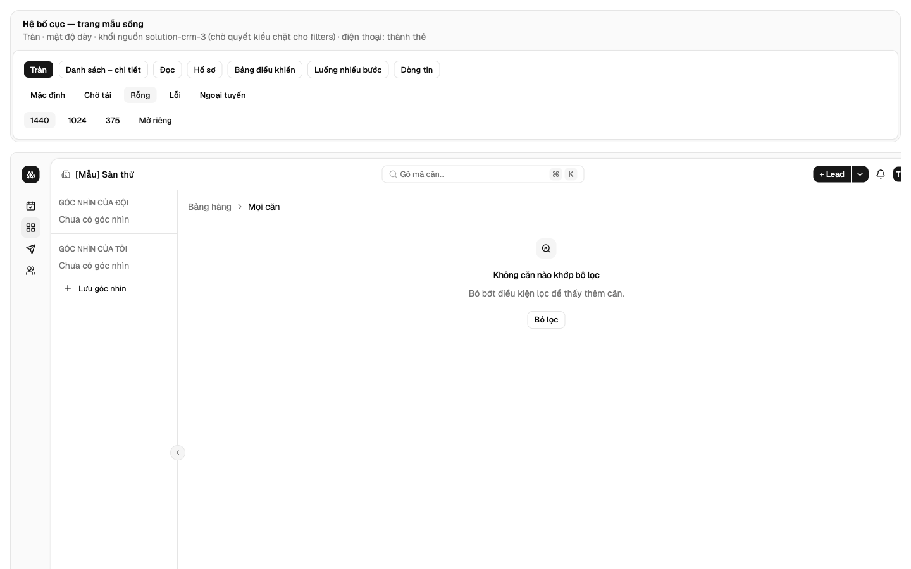
PASS E8 · test
AC-8: Ảnh chuẩn và đối chiếu: Given ảnh chuẩn chụp từ trang mẫu sống When một vòng giao diện chạm màn của một nhóm có khai bố cục Then kho có 21 ảnh chuẩn sáng (bảy bố cục × ba khổ) và 7 ảnh chuẩn tối (bảy bố cục ở 1440), chụp bằng `_acceptance/he-bo-cuc/thu/chup-anh-chuan.cjs`, ghi ở danh mục khối; mục bản đồ khuôn có khoá `bo_cuc`; bộ đối chiếu lập cặp «màn mới · ảnh chuẩn của bố cục nó dùng», kể cả màn đầu của nhóm chưa có màn mẫu; trang ba lối nhận nhiều ô trong một hồ sơ (`ba-loi/<mã ô>/`, lệnh `--o <mã ô>`) và kiểm chuẩn kiểm từng ô, lỗi gọi tên ô.
ℹ duration_ms 16410.855958 (lệnh npm test -w @quy-hang/ui-lint kết thúc sạch)
PASS E9 · test
AC-9: Răng lint: Given một màn dưới `(app)` (tệp thử) When chạy `npm run lint` Then đỏ với thông điệp gọi tên luật ở mỗi ca: nhóm của màn không khai bố cục hay khuôn không dựng đúng kiểu; màn đặt `max-w-*`, `h-[…]`, `w-[…]`, `min-h-[…]` hay lề ở gốc; nhập `Skeleton` ngoài khuôn chờ tải; nhập `Sheet`/`Drawer` ngoài ngăn nổi; màn của hàng đang chạy mang ngoại lệ có hạn (hạn trỏ hàng đã gộp thì đỏ); mức nợ giữ 0.
carry-forward tu round 1 — delta khong cham paths cua eval
PASS E9b · script
AC-9: Răng lint: Given một màn dưới `(app)` (tệp thử) When chạy `npm run lint` Then đỏ với thông điệp gọi tên luật ở mỗi ca: nhóm của màn không khai bố cục hay khuôn không dựng đúng kiểu; màn đặt `max-w-*`, `h-[…]`, `w-[…]`, `min-h-[…]` hay lề ở gốc; nhập `Skeleton` ngoài khuôn chờ tải; nhập `Sheet`/`Drawer` ngoài ngăn nổi; màn của hàng đang chạy mang ngoại lệ có hạn (hạn trỏ hàng đã gộp thì đỏ); mức nợ giữ 0.
chuẩn giao diện: đạt
PASS E10 · test
AC-10: Chuyển màn và bản đồ hệ thiết kế: Given kho sau hàng When đọc mã và tài liệu Then Cài đặt sàn ở `(app)/settings` đi bố cục Đọc, mục Người dùng chuyển thể `solution-users-8`; trang tạm đi bố cục Đọc; `vo-va-ia.md` §2 có cột «Bố cục»; skill `quy-hang-ui` có bảng «Bản đồ hệ thiết kế» mỗi tệp một dòng (lớp, việc, đường dẫn), `docs/README.md` trỏ sang bảng; kiểm chuẩn đỏ khi một tệp thuộc hệ thiết kế thiếu dòng.
ℹ duration_ms 16410.855958 (lệnh npm test -w @quy-hang/ui-lint kết thúc sạch)
PASS E10u · ui-check
AC-10: Chuyển màn và bản đồ hệ thiết kế: Given kho sau hàng When đọc mã và tài liệu Then Cài đặt sàn ở `(app)/settings` đi bố cục Đọc, mục Người dùng chuyển thể `solution-users-8`; trang tạm đi bố cục Đọc; `vo-va-ia.md` §2 có cột «Bố cục»; skill `quy-hang-ui` có bảng «Bản đồ hệ thiết kế» mỗi tệp một dòng (lớp, việc, đường dẫn), `docs/README.md` trỏ sang bảng; kiểm chuẩn đỏ khi một tệp thuộc hệ thiết kế thiếu dòng.
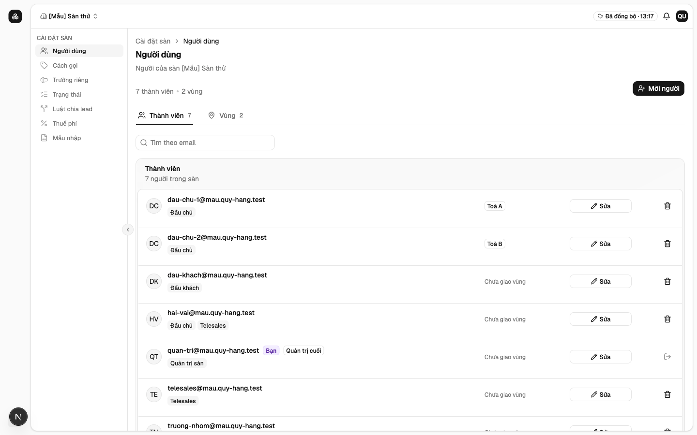

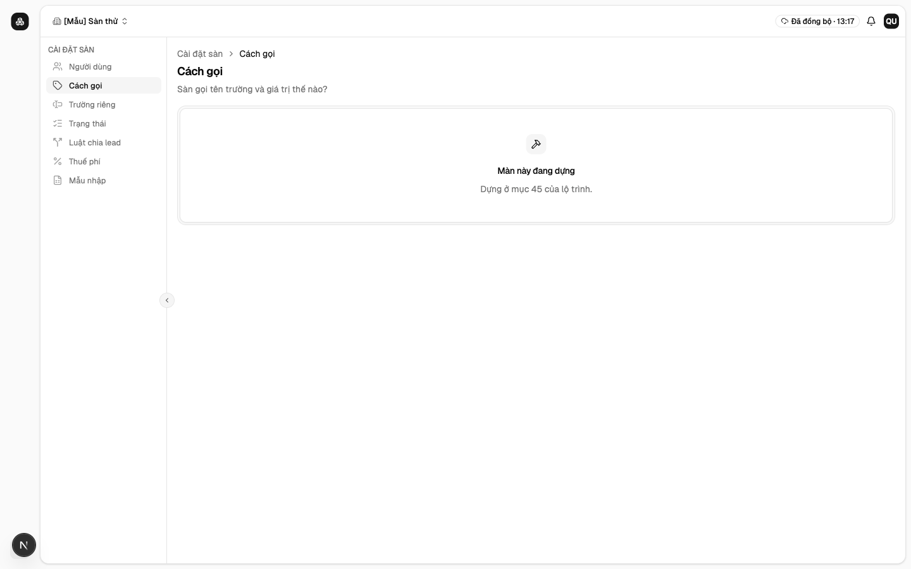
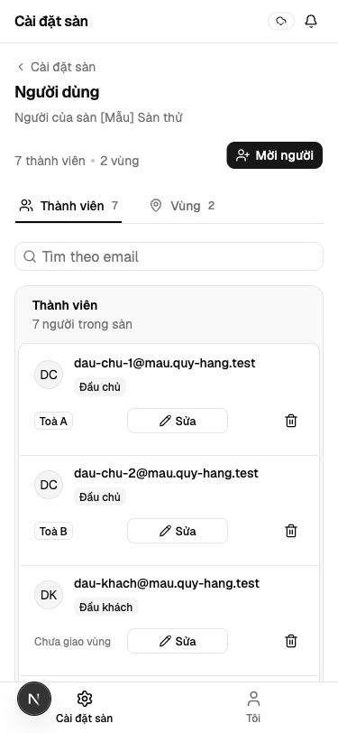
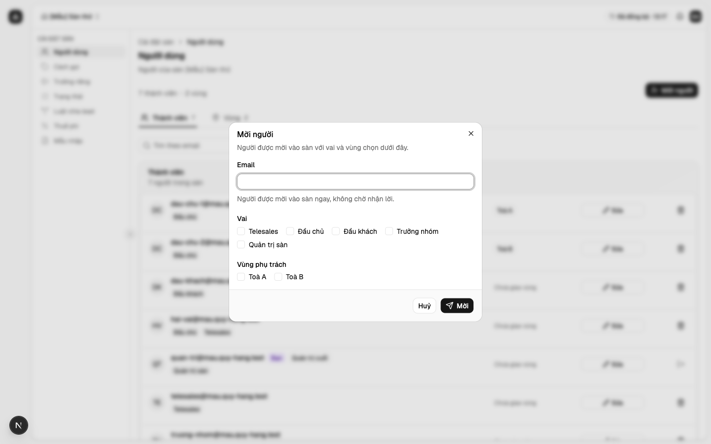
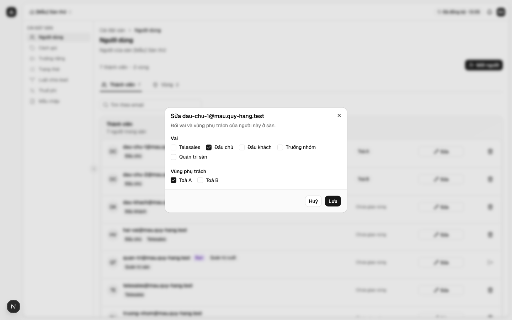
PASS E11 · script
AC-2: Bảy bố cục và sáu vùng: Given một màn dưới `(app)` dựng `<BoCuc kieu="…">` với vùng của nó When màn hiện ở máy tính rộng Then đúng bảy kiểu được nhận (kiểu lạ là lỗi kiểu TypeScript); bố cục chỉ giữ khung trang — lề, dải đầu màn, xếp thân và cột phụ theo kiểu — và không tự dựng Frame: mỗi vùng là một khối ReUI nguyên vẹn mang Frame của nó (đầu khung, thanh công cụ, chân); cột phụ chỉ ở Danh sách – chi tiết (hồ sơ trong ngăn inset bên phải) và Luồng nhiều bước; Hồ sơ một cột căn giữa; lề, khoảng cách lấy từ token bố cục, không từ số trong màn; mỗi ô của trang mẫu mang một nhãn nguồn (khối · c-* · thành phần · ghép) ở bảng bóc tách, không ô nào vẽ tay.
design-floor-s4 không in dòng lỗi nào; lệnh kết thúc sạch, không có mã màu thô trên tệp giao diện vòng chạm.
Eval không phân biệt (Analyst)
Vòng verify
- Round 1: E1, E1b, E4, E4c, E9 dat va duoc mang sang round 2 (carry-forward); chi tiet round 1 khong nam trong du lieu round nay.
- Round 2 (luot dau): E6 chua dat — Luong nhieu buoc o 375 chua la ngan phu toan man; sua o commit 750e735, tra ve trien khai.
- Round 2 (chay lai tren 77a20a0): moi eval dat, khong con eval nao rot.
Tài nguyên
| Khối | Tác tử | Token đầu ra |
|---|---|---|
| S4 round 1 | 22 | 154.457 |
| S4 round 2 | 21 | 154.741 |
| S4 round 2 (chấm lại trên cây mới) | 19 | 107.544 |
3 lượt chấm · tổng 416.742 token
Giới hạn và ngoài hợp đồng
- Chuyển Bảng hàng, hồ sơ căn, Hôm nay, lead sang bố cục — mỗi màn chuyển ở hàng của nó; hàng này chỉ ghi ngoại lệ có hạn.
- Đăng nhập (`auth-15`) và ô nhận lead (`form-2`) — hàng riêng khi hàng 91 gộp, giám sát cấp mã.
- Khuôn không đủ quyền và xung đột khi lưu (ADR-0024 quyết định 4).
- Lệnh dựng màn sinh khung từ khối (ADR-0024 «Phương án đã cân»).
Giao
chưa ghi quan sát production
Giá trị
- Câu hỏi phép đo trả lời: [đề xuất] đã đạt «Một màn dưới (app) không khai bố cục, đặt max-w hay h-[…] tay, dựng Skeleton ngoài khuôn hay gọi thẳng Sheet → npm run lint đỏ; trang mẫu sống mở không có Postgres, không đăng nhập, đủ bảy bố cục × chờ tải · rỗng · lỗi · ngoại tuyến × ba khổ; vòng giao diện so màn mới với ảnh chuẩn của bố cục nó dùng; MCP reui và shadcn chạy từ .mcp.json của kho; Cài đặt sàn (kèm Người dùng theo solution-users-8) và trang tạm đã chuyển, TrangThai chuyển thể empty-state, màn của hàng đang chạy mang ngoại lệ có hạn; skill quy-hang-ui có bảng «Bản đồ hệ thiết kế» mỗi tệp một dòng (lớp, việc, đường dẫn), docs/README.md trỏ sang bảng, một tệp hệ thiết kế thiếu dòng → kiểm chuẩn đỏ» chưa? — chưa đo
- Kết quả nào là SỐNG: [đề xuất] Một màn dưới (app) không khai bố cục, đặt max-w hay h-[…] tay, dựng Skeleton ngoài khuôn hay gọi thẳng Sheet → npm run lint đỏ; trang mẫu sống mở không có Postgres, không đăng nhập, đủ bảy bố cục × chờ tải · rỗng · lỗi · ngoại tuyến × ba khổ; vòng giao diện so màn mới với ảnh chuẩn của bố cục nó dùng; MCP reui và shadcn chạy từ .mcp.json của kho; Cài đặt sàn (kèm Người dùng theo solution-users-8) và trang tạm đã chuyển, TrangThai chuyển thể empty-state, màn của hàng đang chạy mang ngoại lệ có hạn; skill quy-hang-ui có bảng «Bản đồ hệ thiết kế» mỗi tệp một dòng (lớp, việc, đường dẫn), docs/README.md trỏ sang bảng, một tệp hệ thiết kế thiếu dòng → kiểm chuẩn đỏ — chưa đo
- Kết quả nào là CHẾT: [đề xuất] chưa đạt «Một màn dưới (app) không khai bố cục, đặt max-w hay h-[…] tay, dựng Skeleton ngoài khuôn hay gọi thẳng Sheet → npm run lint đỏ; trang mẫu sống mở không có Postgres, không đăng nhập, đủ bảy bố cục × chờ tải · rỗng · lỗi · ngoại tuyến × ba khổ; vòng giao diện so màn mới với ảnh chuẩn của bố cục nó dùng; MCP reui và shadcn chạy từ .mcp.json của kho; Cài đặt sàn (kèm Người dùng theo solution-users-8) và trang tạm đã chuyển, TrangThai chuyển thể empty-state, màn của hàng đang chạy mang ngoại lệ có hạn; skill quy-hang-ui có bảng «Bản đồ hệ thiết kế» mỗi tệp một dòng (lớp, việc, đường dẫn), docs/README.md trỏ sang bảng, một tệp hệ thiết kế thiếu dòng → kiểm chuẩn đỏ» khi hết timebox — chưa đo
- Timebox: [đề xuất] một lượt của đợt kế — giờ máy dự báo 1–6,5 giờ (`du-bao.json`) — chưa đo